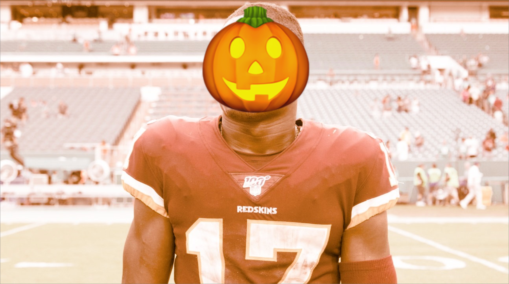
Happy Halloween fellas, you’ll either get a Scary of Most Feared note below 🎃
Eat lots of candy, but don’t forget to brush your teeth!
Waiver Wire Wizard: Yung Pangy with the $7 bid on Schultz, he or the Freierman 👨🏻🚒 should be able to plug and play any week.
Match-up of the Week: The Brother Bowl is usually a lock but Andy’s just giving this week away.
So instead, I’ve got my eyes on Wheelin & Thielen (4-3) vs. Unpaid Bills (2-5), on paper it’s a very close matchup, and I can’t get enough of Neil riding the Bills and CJ starting Geno.
Power Rankings - Week Eight
1. PJ (5-2)
Another week and PJ’s weenor keeps growing with the layup against Neil.
Most Feared: Kittle is getting going.
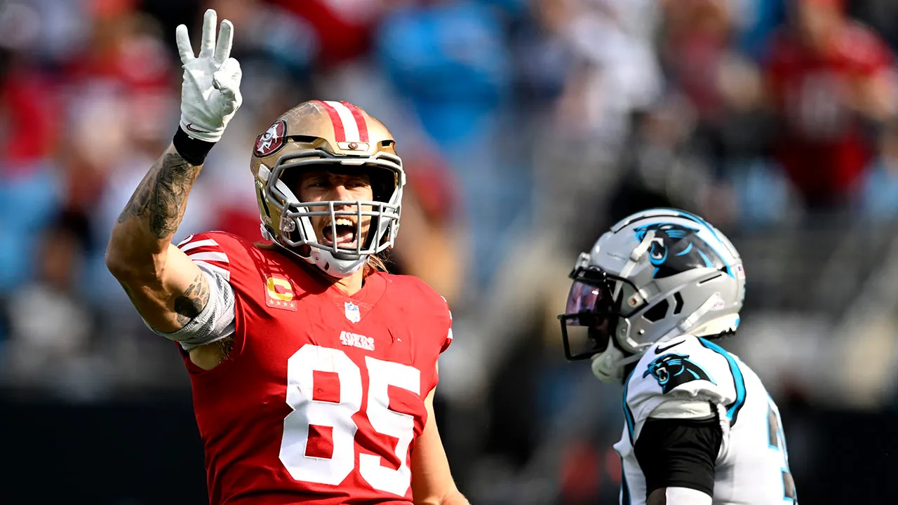
2. Seif (4-3)
Top scorer of the week and for the season, Seif, takes down Pangy in last week’s big game, but Hall and Chase go down. Seif can likely sustain at WR, but now he’s relying on a Panther or Commander at his RB2.
Most Feared: Ekeler is an unstoppable force.
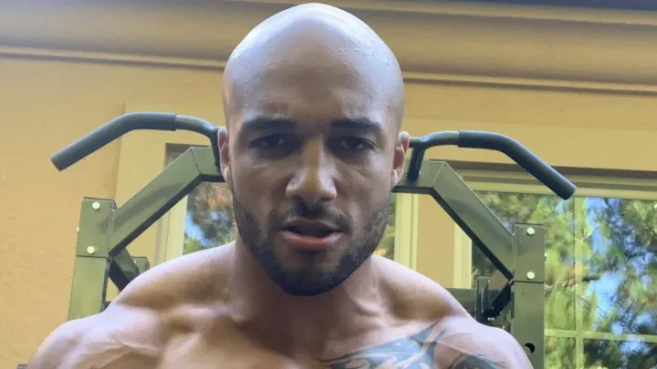
3. Pangy (5-2)
Pangy had a nice showing against Seif, but not enough to get it done.
Scary: Can Metcalf and St. Brown stay healthy? Oh and Scary Terry is scary too, so let’s mention him here.
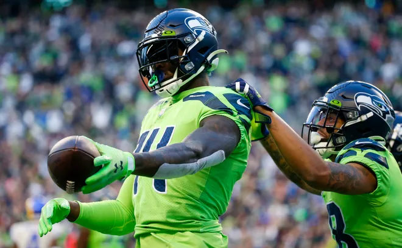
4. Andy (5-2)
Andy totally folds this week as he seemingly will not field a full lineup, let’s see how that bold strategy pays off, cotton.
Scary: Nathaniel Hackett-like coaching this week.
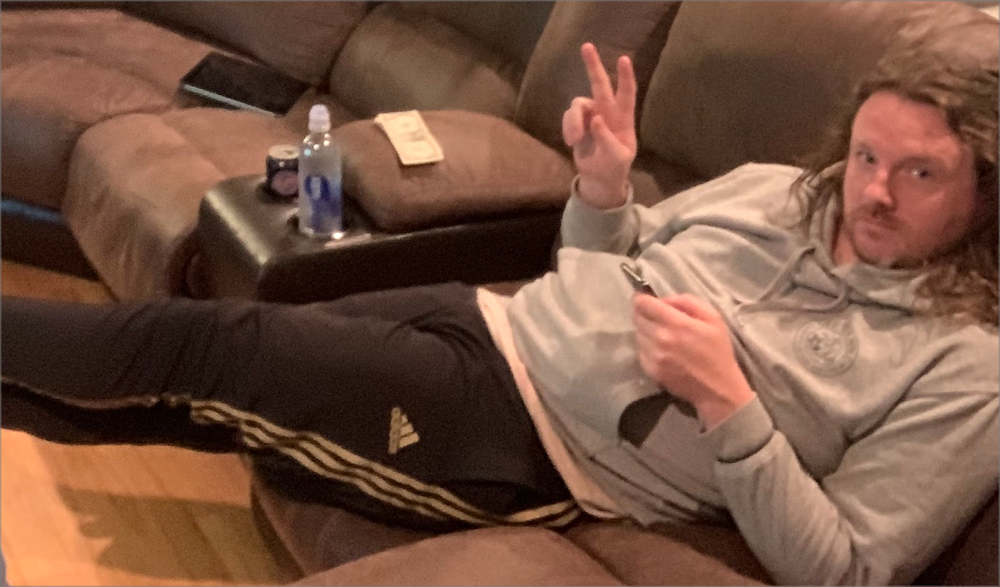
5. Joel (4-3)
Eno Benjamin has been great filling in for Connor, and a smart move for Joel to snag him. It pays off in Joel’s close win over Kris.
Most Feared: Josh Jacobs is on the best stretch of his career, averaging 150yds and 2tds over the last three weeks.
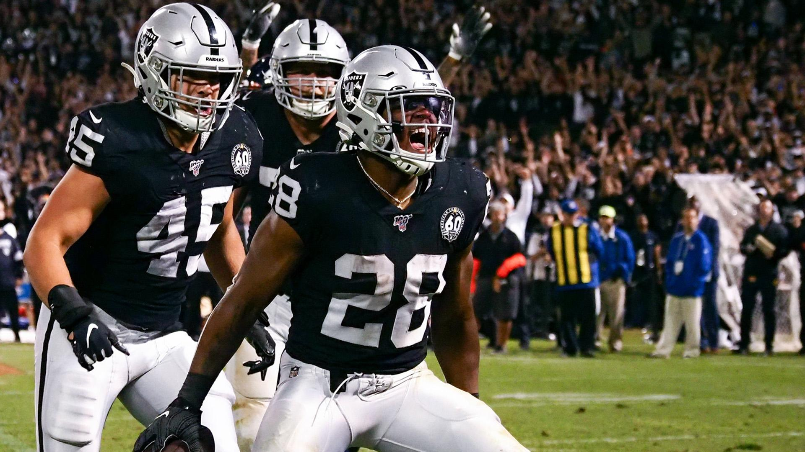
6. Chris (4-3)
CJ drives home his victory with his defense and kicker leading his team in scoring, that’s pretty impressive. Big controversy at QB on this team with Geno and TB, Tom keeps yelling at Geno, but it’s not getting him the starting nod.
Scary: Jonathan Taylor, are you here? Please stand up.
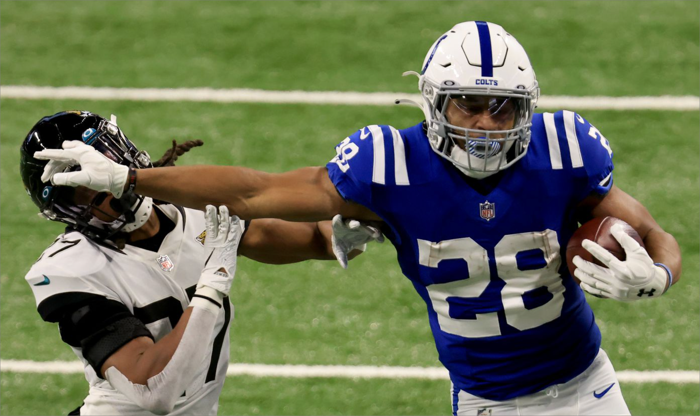
7. Tony (3-4)
Ooof, really hope Andrews is back quickly. Glad to hear it’s not serious but I feel like it’s gotta be a little serious the way he left the game. Tony gets Toney, that’s a nice story.
Scary: Starting Najee and Mostert, yikes!
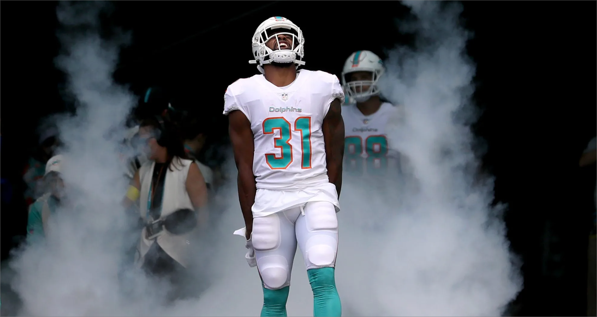
8. Jake (2-5)
Swift, Pollard, and Etienne, are looking good enough for me at RB with Kupp and JJ stacked out wide. Last time Pollard started he was RB1 for the week. Etienne leads the league in YPC.
Scary: That Pacheco buy is gonna come back and haunt me.
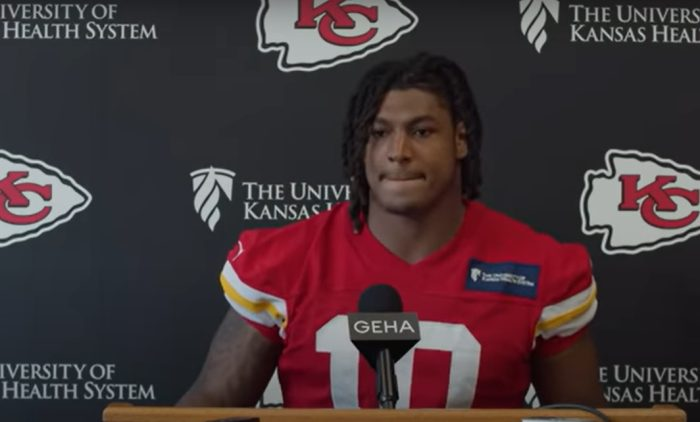
9. Neil (2-5)
I hop Neil because he has Kyle Pitts on his team now. Love seeing Gabe and Knox in the lineup for Neil, that feels right.
Most Feared: Saquon, ya heard of him?
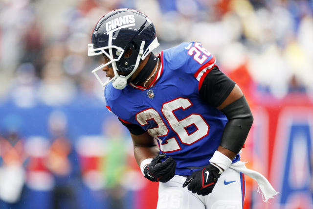
💩 Kris (1-6)
Kris is that guy, that scummy, scummy guy. Someone had to be them but Kris is that guy.
Scary: Watson is rostered, that’s scary for all women.
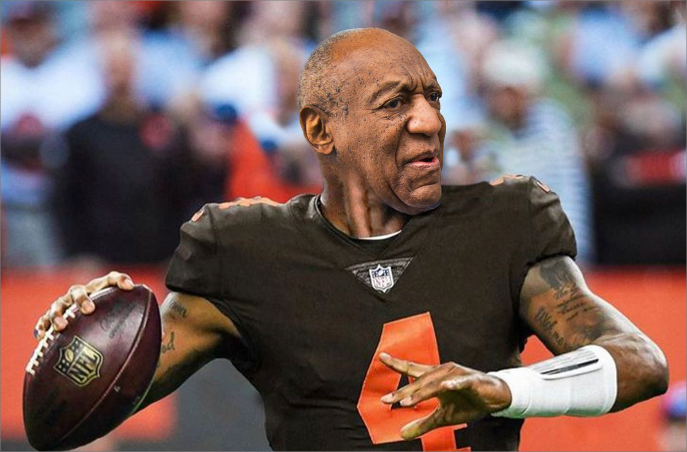
Good luck to everyone besides Seif! Stay spooky! - 🐍
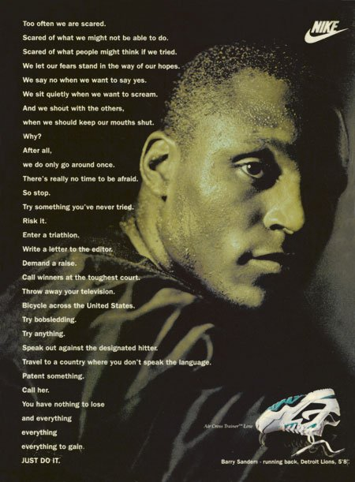
- Barry Sanders (but probably Nike actually)
Don’t be too scared out there! - Jake 👻